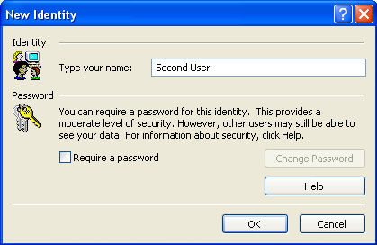
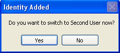
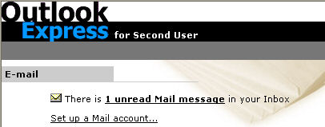
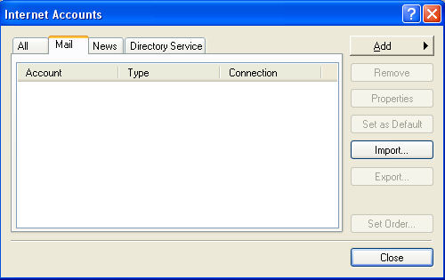
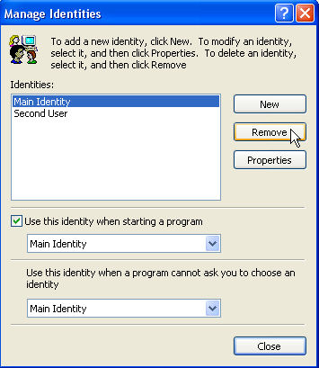

Free
computer Tutorials
|
Free
computer Tutorials
|
|
 home home |
Stay at Home and Learn | ||||
Use an Identity to set up a second email account
If you have more than one user on the same PC, you can set up a separate identity for them. That way, they won't get their account mixed up with yours. They won't be able to see your emails, and you won't be able to see theirs. To set up a separate identity in Outlook Express, do the following:
 At the top of the New Identity box, type a name (We've called ours Second User.) You also have the option of setting up a password for the identity. But as the help button informs you, this is not terribly secure. We'll leave it blank. Click the ok button and you get a message box popping up:  Click Yes to switch to the new identity. Your Outlook Express screen will then tell you that you have one unread message (this is just the Microsoft Welcome email.)  Notice that the name of the Identity is showing - Second User, in our case. If you look on the left, you'll see the folder bar is showing 1 message in the Inbox. Any folders you set up for your main account will not be there: the two accounts are kept separate. You now need to set up an email account for this Identity. Click Tools > Accounts, then click the Mail tab. You'll see that the text area is blank:  The email account you set up in your identity is missing! You can only see your email account if you switch to your identity. To set up a new email account, click the Add button. Then click Mail. If you're not sure how to create an email account, see the following tutorial: How to set up an Outlook Express email account.
Switching IdentitiesTo switch back to your email account (your Identity), click the File menu. From the File menu, select Switch Identities. You'll see the following box:  The Log Off identity button is quite confusing. If you click it, it closes down Outlook Express. To switch identities, select the Identity you want from the list, then click the OK button. You will then be able to access your own emails.
|
|||||
|